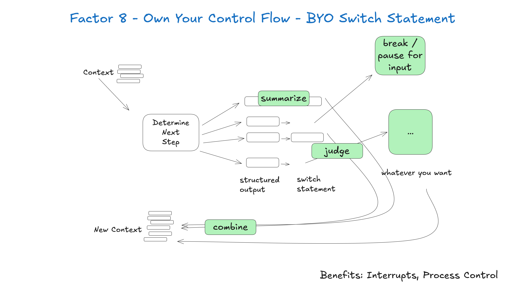

8. 自己掌握控制流（Own your control flow）
控制流自己掌握，就能玩很多花樣。

為你的特定使用情境，打造說得通的控制結構。具體來說，某些型別的工具呼叫，可能就是跳出迴圈、等待真人回覆或等待訓練 pipeline 這類長時間任務的理由。你可能也會想自己實作：
- 工具呼叫結果的摘要或快取
- 對結構化輸出做 LLM-as-judge
- 脈絡視窗壓縮或其他記憶管理
- 日誌、追蹤與量測指標
- 客戶端限流
- 持久化休眠／暫停／「等待事件」
下面這個例子展示三種控制流模式：
- request_clarification：模型要求更多資訊，跳出迴圈等待真人回覆
- fetch_git_tags：模型要求一份 git 標籤清單，抓取標籤、附加到脈絡視窗，然後直接送回模型
- deploy_backend：模型要求部署後端，這是高風險動作，所以跳出迴圈等待人為核准
def handle_next_step(thread: Thread):
while True:
next_step = await determine_next_step(thread_to_prompt(thread))
# inlined for clarity - in reality you could put
# this in a method, use exceptions for control flow, or whatever you want
if next_step.intent == 'request_clarification':
thread.events.append({
type: 'request_clarification',
data: nextStep,
})
await send_message_to_human(next_step)
await db.save_thread(thread)
# async step - break the loop, we'll get a webhook later
break
elif next_step.intent == 'fetch_open_issues':
thread.events.append({
type: 'fetch_open_issues',
data: next_step,
})
issues = await linear_client.issues()
thread.events.append({
type: 'fetch_open_issues_result',
data: issues,
})
# sync step - pass the new context to the LLM to determine the NEXT next step
continue
elif next_step.intent == 'create_issue':
thread.events.append({
type: 'create_issue',
data: next_step,
})
await request_human_approval(next_step)
await db.save_thread(thread)
# async step - break the loop, we'll get a webhook later
break這個模式讓你能視需要打斷並恢復代理的流程，讓對話與工作流更自然。
例子：我對市面上每個 AI 框架的頭號功能請求，就是希望能打斷正在工作的代理、稍後再恢復，尤其是在工具選定與工具實際執行之間的那個瞬間。
沒有這種程度的可恢復性與細緻度，就沒辦法在工具呼叫執行前先審查／核准，於是你只能三選一：
- 在記憶體裡暫停任務，等待長時間工作完成（也就是
while...sleep），而一旦行程中斷，就得從頭重來 - 限制代理只能做低風險、低代價的呼叫，例如研究與摘要
- 給代理更大的權限去做更有用的事，然後碰運氣祈禱它不要搞砸
你可能注意到，這和要素 5：統合執行狀態與業務狀態與要素 6：用簡單的 API 啟動、暫停、恢復密切相關，但可以獨立實作。